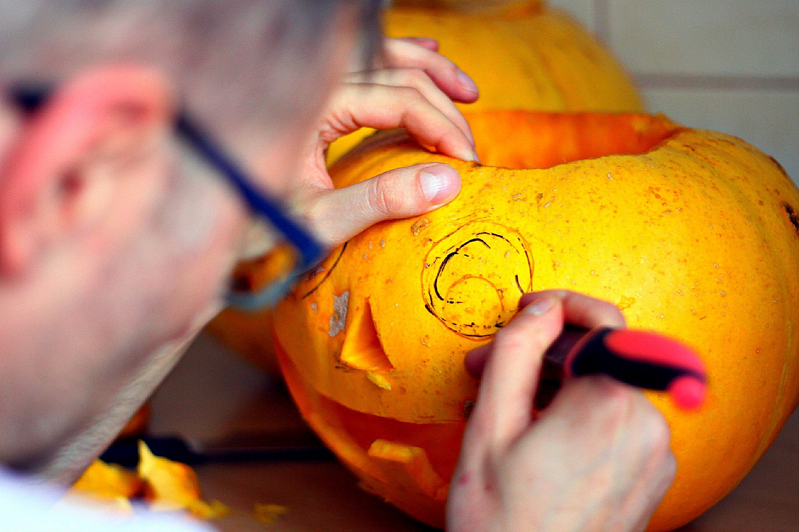

Carving a Pumpkin
It’s finally Halloween! Since you can’t go out trick or treating, why don’t you try decorating the house to fit the theme for Halloween instead? One of the most classic and fun decorations for Halloween is carved pumpkins. Carved pumpkins are not only simple but also fun as well when making with others. Why don’t you try making one yourself then?
How to Carve a Pumpkin
As said above, making carved pumpkins are not so hard, but they aren’t really simple in the meantime. You can make some mess, or sometimes possibly forget what your next steps are. Here are the steps below, of how to make a scary-looking pumpkin. Try following the steps written below, it should help or remind you how to make one!
Preparation:
- Remember to always have enough workspace. This would make it easier for you to work on your pumpkin.
- Remember to clean up your working space as soon as possible. If your workspace is unorganized, it will result in having less workspace.
- Careful with tools! When carving a pumpkin, you will be using a knife to make holes on the pumpkin! Be aware of your surroundings.
- Make sure to keep knives or sharp tools away from kids. When they do use the tools, make sure to supervise them at all times.
- When choosing which knife to use, use a serrated knife, it will be easier to cut the pumpkin.
- Have a plan! Have a design idea of how your pumpkin will look at the end.
- Make sure to never harm yourself during the progress. You should be making a happy memory, not a painful one.
- Finally, make sure to have fun!
Carving the Pumpkin:
- Making the lid of the pumpkin
- Grab a knife with one hand, grab the pumpkin with the other hand for stability
- Start cutting around the stem, leaving about 2 inches of space around
- Make sure to cut at an angle. This will prevent the lid from falling into the pumpkin.
- You can cut the lid in any shape you want.
- After the cutting in, grab the stem and pull hard
- The top part where you cut should be removed easily.
- Put the lid aside for now
- Emptying the pumpkin
- Grab a big spoon with one hand, and grab the pumpkin with the other hand for stability
- A bigger spoon will be easier to empty the pumpkin.
- With the spoon, scrape the insides of the pumpkin
- Remove the insides as much you can
- If not, the light you will be putting inside the pumpkin will not be noticeable.
- Put the insides of the pumpkin away from your working space
- No need to throw it away! You can make dishes with the insides.
- Rough sketches (when have a design printed out)
- Grab a needle
- Any other tool is fine, but it has to be thin, sturdy and pointy on the edge.
- Overlay the print on top of the pumpkin
- Using tape may help you stabilize the printout to stay on top of the pumpkin.
- Start poking the edges of the design with the needle
- Make sure the needle (or another tool) pierces through the paper and the pumpkin. If not the hole will not be visible for future work.
- Remove the printout, and check if holes are made correctly
- Making the face 
- Grab the knife with one hand, grab the pumpkin with the other hand for stability
- Any other tool is fine.
- Same as making the lid, start cutting out the parts of the pumpkin to make a face
- Make sure to cut with a plan, if not it may not look so scary!
- If you have finished step 3, follow the small holes to cut out the parts of the pumpkin
- Putting a light source
- Open the lid of the pumpkin (if closed)
- Put your preferred light source inside the pumpkin
- For a light source, you can use a candle or artificial lights. When using candles make sure to keep an eye on them in case of a fire.
- Ignite/turn on the light source
- Close the lid of the pumpkin
Image from Pixabay.
Image of a person cutting a pumpkin to make it's face.
Simple as that, you finally made your own carved pumpkin! Now, put the pumpkin in front of your house, and scare off people with your scary carved pumpkin! Happy Halloween!
Image from Pixabay.
Image of a scary carved pumpkin, lighted and surrounded by fog.